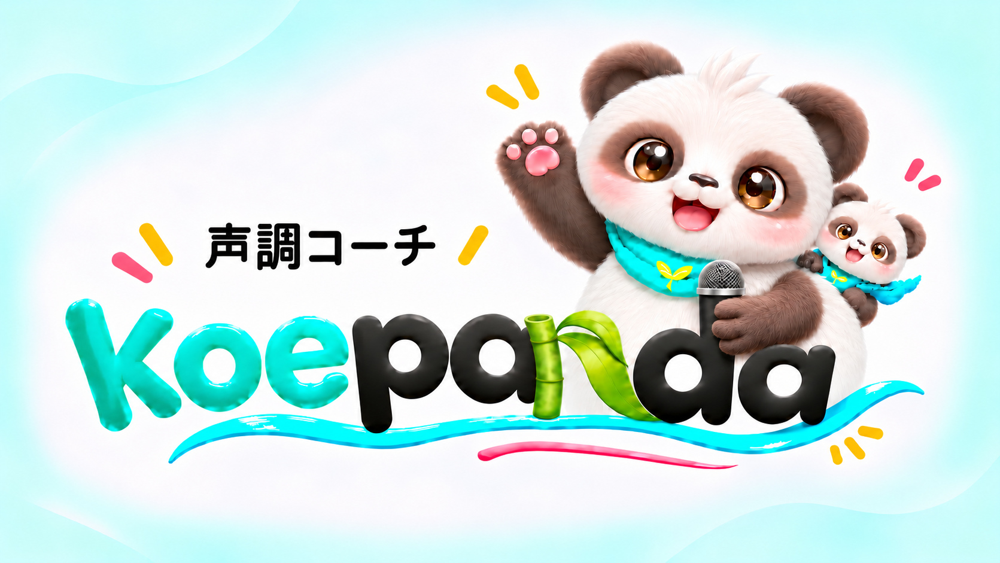

発音から始めて、使える中国語へ。
Koepanda（コエパンダ）は、中国語の発音を大切にした学習サービスです。ピンインと四声から始め、漢字の読み書きや会話を練習しながら、少しずつ使える表現を増やしていきます。
Koepandaでできること
- 発音を基礎から お手本を聞いて声に出し、ピンインと四声を身につけます。
- 漢字から会話へ 漢字の認読・筆順・なぞり書きを練習し、日常の表現を会話で使ってみましょう。
- 中国語検定を目指す 準4級に向けた漢字練習から、今のレベルに合った学習を進められます。
- 辞書で調べる 読めない漢字は手書きで検索。読み方は音声で確認できます。
こんな方におすすめ
- 中国語をゼロから始めたい。発音も基礎から身につけたい。
- 中国語検定の合格を目指して、今のレベルに合った勉強をしたい。
- 中国語の基礎はある。もっと自然に話せるようになりたい。
小音と、中国語を一歩ずつ。
毎日、コーヒーを一杯飲む時間。 一回のレッスンは小さな目標ひとつ。今日はここまで、明日はその続きから。
毎月コーヒー一杯分で、気軽に続けられる学びを目指しています。
学習をはじめる →
中国語学習・日中翻訳のご相談
声調の練習方法や、お子さんに合った学び方、日本語・中国語間の翻訳など、お気軽にメールでご相談ください。
koepandajp@gmail.com
メールで相談する